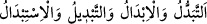

gibi) kitaplarda mevcuddur.
“Elinin altında bulunan cariyeler hariç” Bu ifâde, “kadınlar”dan istisnâdır. Çünkü
“kadınlar” kelimesi, hem hür kadınları hem de câriyeleri içine alır. Yâni bu sahip
olduğun dokuz kadından başkası sana helal değildir. Ancak sağ elinin sahip oldukları,
yâni senin mülkünde olan (câriyeler) bunun dışındadır. Çünkü Hz. Peygamber (s.a.)’e
câriye edinmek helal kılınmıştır. İbn Abbas (r.a.): “Hz. Peygamber (s.a.) bu dokuz
hanımından sonra İbrahim (r.a.)’ın annesi Mısırlı Mâriye’yi câriye olarak almıştır.” der.
“Güzellikleri hoşuna gitse bile”
“
” beğenmek, hoşuna gitmek demektir. Râğıb şöyle demiştir: “
”
(hayret ve şaşkınlık)” bir şeyin sebebini bilmemekten dolayı insana ârız olan bir haldir.
Bâzen hoşa giden şey için de kullanılır. “
(güzellik)” bir şeyin tab‘a/tabiata uygun
olmasıdır. Gözle güzel bulunan şeye genel kullanımda “
” denir.
Mânâ şöyledir: Değiştirmek istediğin eşlerin güzellikleri ve cemalleri hoşuna gitse de
gitmese de, yâni onların güzelliğini beğenme ve beğenmeme durumunda, yâni her
halükârda bunların yerine başka hanımlar alman sana helâl değildir.
İbn Abbâs (r.a.) şöyle demiştir: “Burada bahsedilen kadın, Ca‘fer b. Ebû Talib’in
hanımı Esma bint Umeys el-Has’amiyye’dir. Ca‘fer şehid olunca Rasûlullah (s.a.) Esmâ
ile evlenmek istedi. Allah Teâlâ kendisine bunu yasaklayınca, bundan vazgeçti.
Rasûlullah (s.a.)’in izniyle Esmâ bint Umeys, Ebû Bekir (r.a.) ile evlendi.
et-Tekmile’de şöyle denilmiştir: “Allah Teâlâ burada Eş’as b. Kays’ın kız kardeşi
Habbâbe’yi murâd etmektedir.”
Bir hadîste: “Rabbime yalnız benimle cennette beraber olacak kadınlarla evlenmeyi
şart koştum.”[263] buyrulmuştur. Esmâ veya Habbâbe dünyâda Rasûlullah (s.a.)’e âile
olmadılar. Cennette onun makamında onunla beraber olmaya ehil değillerdi. Bu sebeple
Allah bu kadınları O’ndan uzaklaştırdı. Çünkü Allah sûrete değil mânâya bakar.
Gönlün mânânın esiri olunca,
Mânevî aşk, zâhirî aşktan daha iyi olur.
Mânâ güzelliği sana engel ve kalkan olmaz,
Onun aşkı yok olmaktan uzak ve berî olur.
Âlem halkı hep bu iştedirler,
Sûretlerin perdesine tutulmuşlardır.
Bir hadîste şöyle buyrulmuştur “Kim bir kadını malı ve güzelliği için nikâhlarsa
onun malından ve güzelliğinden mahrum olur. Kim de bir kadınla dindarlığından
dolayı evlenirse Allah o kişiyi o kadının malı ve güzelliği ile rızıklandırır.”[264]
“Bunların yerine başka hanımlar alman...”
Râğıb der ki: “
” bir şeyi diğerinin yerine koymaktır. “
(ivaz)”dan daha umûmîdir. Çünkü ivaz, birincisini vermekle ikincisinin senin olmasıdır.